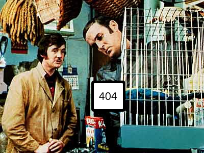

'E's not pinin'! 'E's passed on! This parrot is no more! He has ceased to be! 'E's expired and gone to meet 'is maker! 'E's a stiff! Bereft of life, 'e rests in peace! If you hadn't nailed 'im to the perch 'e'd be pushing up the daisies! 'Is metabolic processes are now 'istory! 'E's off the twig! 'E's kicked the bucket, 'e's shuffled off 'is mortal coil, run down the curtain and joined the bleedin' choir invisibile!! This is an ex-parrot!!
s/parrot/page/g